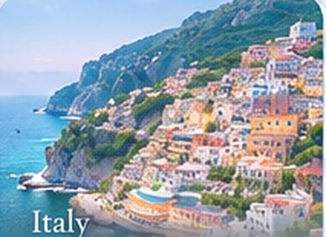

本文へ / Skip to content
✈
TORAMI TRAVEL
Home
Atlas
Destinations
Themes
Rankings
Travel Gacha
Diary
About
⌕
EN
☰
ホーム
世界地図
国・都市
テーマ
ランキング
旅ガチャ
旅日記
紹介
✧ TORAMI TRAVEL ✧
One Photo, One Destination
一枚の景色から、旅が始まる
01 / AEGEAN BLUE
Greece ↗

02 / COASTAL COLORS
Italy ↗
現在はイメージビジュアルを掲載。実際の旅行写真を順次追加します。
×
Find your next escape
⌕
検索 →